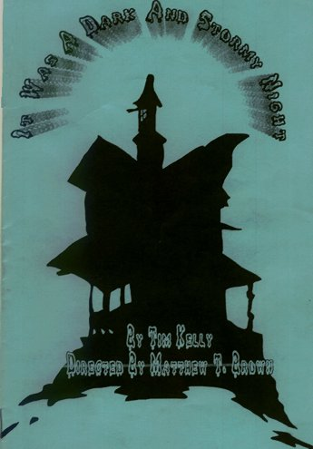

?

CAST:
Hepzibah Saltmarsh...Claire B.
Arabella Saltmarsh...Samantha K.
Olive...Shana H.
Ebenezer Saltmarsh...Clayton C.
Jane Adams...Corey P.
Mary Shaw...Mary G.
Snell...Patrick C.
Ed Perkins...Rion R.
Dorothy Blake...Janet P.
Belle Malibu...Jenny M.
Dawson...Jon K.
Uncle Silas...Tom S.
Smilin' Sal...Bethany J.
Euphemia Porter...Ramie R.
SYNOPSIS:
"It was a Dark and Stormy Night" is a spoof on the old comedic stage and films of the '20s and '30s.
The whole production takes place in "Ye Olde Wayside Inn", an isolated place in Northern Massachusetts.
We have 2 wacky, spinster women (cousins), an insane male cousin and a host of unwanted visitors. Kind of puts you in mind of "Arsenic and Old Lace". :)
This was by far, my most favorite production...I truly enjoyed my character; Olive.
She was a bit of an odd duck. Quirky, eccentric in her own way. She fit right into the Saltmarsh family, though she was no relation to them. :)
I really threw myself into this part...I could relate to Olive and her quirkiness.
She was a lot of fun! And she rec'd some good laughs. :)
Background by ShadyLadyGraFix © 2005
All rights reserved.